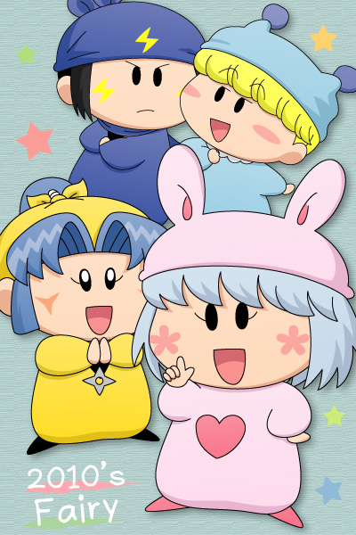
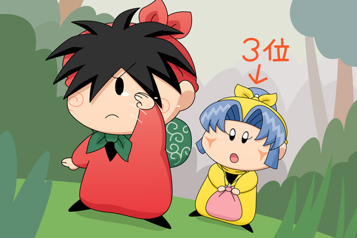

ムルモ屋本舗での年末恒例行事と言えば、チャットの他に妖精人気投票があります。第３回目となった２０１０年の結果を、記念イラストとともに発表します。
２０１０年も、トップページの投票より人気投票を実施しました。［コメント一覧］
ミルモ＆ヤマネ＆パピィ＆ネズミ (1)
 １位はパピィ！ それも157票という圧倒的な票数を集めて、ネズミの３年連続１位を阻止しました。パピィは外見や性格含めてすべてが人気で、自分のことをそう思っていたムルモ店長は今頃この結果を見て悔しがっているみたいです。今年こそ告白は成功するのか！？
２位はついに首位陥落のネズミ。とはいえ３位以降との差はまだまだ広く、今年もムルモ屋本舗でたくさん活躍してくれそうです。ネズミといえばアクミとの関係が噂されていますが、今年はまた違った噂が聞こえてきたりして。
３位はネズミの妹のヤマネ。この兄妹は本当に人気ですね。今年もヤシチの後をどこまでも追いかけ続けて欲しいですね。
４位は主人公ミルモが何とかランクイン。これだけ個性派揃いの妖精に囲まれながらも、４位に入るのは、主人公という理由以外にもいろいろありそうですね。
５位以下は以下となりました。
今回はたくさんの妖精に対する投票があり、集計はかなり大変でした～(^◇^;)。
| 今回 | 票数 | 名前 | 2009年 | 2008年 | |
|---|---|---|---|---|---|
| １位 | 157票(7票) | パピィ | ▲ | ２位 | ２位 |
| ２位 | 112票(21票) | ネズミ | ▼ | １位 | １位 |
| ３位 | 65票(7票) | ヤマネ | ▲ | ５位 | ３位 |
| ４位 | 59票(28票) | ミルモ | ▲ | ９位 | ５位 |
| ５位 | 53票 | ヤシチ | ▲ | ７位 | ８位 |
| ６位 | 39票(28票) | センリ | ▲ | １７位 | １２位 |
| ７位 | 38票 | ムルモ | ７位 | ４位 | |
| ８位 | 37票(7票) | ワカバ | ▲ | ２４位 | ２０位 |
| ９位 | 30票(7票) | サスケ | ９位 | １２位 | |
| １０位 | 23票 | ベルル | ▲ | ２４位 | |
| １１位 | 20票 | ウィン | ▲ | ||
| １２位 | 16票 | ハンゾー | ▼ | ３位 | ８位 |
| １３位 | 12票 | アンナ | ▼ | １２位 | ２０位 |
| アオイ | ▲ | ||||
| １５位 | 11票 | オトメ | ▲ | ２４位 | ２０位 |
| アンリ | ▼ | １４位 | ８位 | ||
| １７位 | 10票 | アクミ | ▼ | ５位 | ７位 |
| １８位 | 8票 | コヨミ | ▲ | ２４位 | |
| アロマ | ▼ | １５位 | ６位 | ||
| キャップ | ▲ | ||||
| ２１位 | 6票 | リルム | ▼ | ３位 | １２位 |
| ハーモ | ２１位 | ||||
| トモン | ▲ | ||||
| ２４位 | 5票 | マンボ | ▼ | １５位 | ２０位 |
| カメリ | ▼ | １７位 | |||
| ２６位 | 4票 | クロロ | ▲ | ||
| チーエ | ▲ | ||||
| ２８位 | 3票 | ゴロー | ▲ | ||
| ピカリ | ▲ | ||||
| ３０位 | 2票 | アクア | ▼ | ２４位 | ２０位 |
| マルモ | ▲ | ２０位 | |||
| ３２位 | 1票 | ドンタ | ▲ | ||
| フィア | ▼ | ２４位 | |||
| シロー | ▲ | ||||
| ジロー | ▲ | ||||
| ミモモ | ▼ | １７位 | |||
| イチロー | ▲ | ||||
| チック | ▲ | ２０位 | |||
| ムーン | ▼ | ２４位 | |||
| インチョ | ▲ | １２位 | |||
| サブロー | ▲ | ||||
| ガビン | ▼ | ２４位 | １２位 | ||
| ビケー | ▼ | ２４位 | ８位 | ||
| ペータ | ▲ | １２位 | |||
| ピクモ | ▼ | ２１位 | ２０位 | ||
| ユリン | ▼ | １１位 | |||
| 妖精はるか | ▲ | ||||
| サリア | ▼ | ２４位 | ２０位 | ||
| アカリ | ▲ | ||||
| キーロ | ▲ | ||||
| ソフト | ▼ | １７位 | １２位 | ||
| トルス | ▼ | ２４位 |
なお今回からの試みとして、ボーナス投票を実施しました。
２０１０年末のしめくくりチャットにて、参加者の方より一人ずつ妖精を選んでいただき、総投票数の1%(7票分)をボーナスポイントとして加算しました。
カッコ内の票数がボーナス投票による加算となります。
ヤシチ＆ヤマネ(15)

ヤシチ「くっ、女子受けするネズミはともかく、
ミルモにまで負けるとは・・・この結果は納得できんっ。
修行を積んで、次は絶対に１位を取ってみせるぞ！」
ヤマネ「はいっ、ヤシチ兄様！
私も修行のお供をさせていただくでございます！
次はきっとヤシチ兄様のかっこいいお姿がまとめ記事で描かれるに
違いないでございます」
しかしヤシチはまだ気がついていませんでした。１位を取るために抜かなければいけない相手がヤシチのすぐ後ろにいることに・・・。まぁ気がついたとしても、ヤシチのことだから翌日からのんびり釣りの修行に励むのでしょうけど。
今回は特別貢献賞としてヤシチを描いてみました。次回はヤシチの位置がどうなるのか、それも今年の活躍次第ですね。
人気投票結果はいかがでしたでしょうか？ 今年はどんな妖精が活躍するのかすごく楽しみですね。
(2011/2/12)